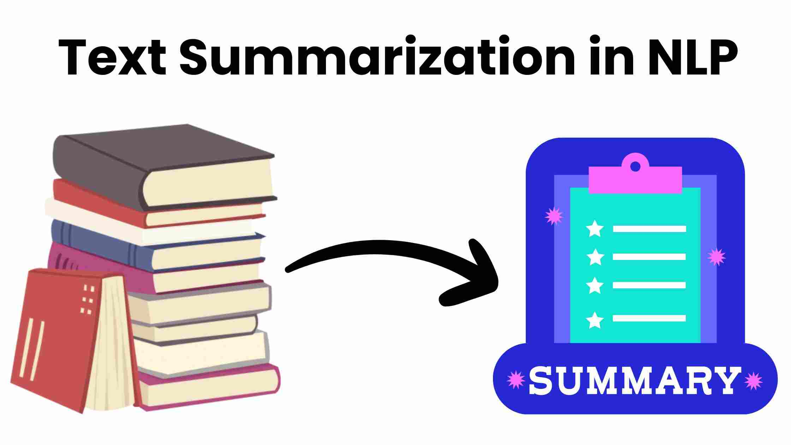

Projects
Automatic News Post Maker

An Automatic News Post Maker is an AI-powered tool designed to generate news articles automatically. It leverages Natural Language Processing (NLP) and Machine Learning (ML) techniques to create coherent and relevant news content from raw data or short input prompts. This system typically uses large language models, like GPT-4, to analyze and summarize data, generate text, and ensure the content is engaging and grammatically correct. Applications include providing real-time updates, generating reports, and producing articles for news websites. Challenges involve ensuring accuracy, maintaining objectivity, and avoiding biases in the generated content.
Data Summarisation Using NLP
Data summarization using NLP condenses large texts into shorter, coherent summaries through extractive or abstractive methods. Extractive summarization selects key sentences from the text, while abstractive summarization generates new sentences to convey main ideas. Techniques include tokenization, word embeddings, sentence scoring, semantic analysis, and neural networks like Transformers. Applications range from news aggregation and academia to customer service and legal fields. Challenges include improving semantic understanding, coherence, and addressing biases in training data.
Data Visualization of Token Currency

This project involved developing a data visualization dashboard to represent the transaction flows and market trends of a specific token currency. Using libraries like Chart.js and D3.js in a React JS environment, the dashboard provides interactive charts that display real-time updates from blockchain data. The visualizations include price fluctuations, transaction volumes, and distribution metrics, enabling users to gain insights into the market dynamics of the token. This project demonstrates my ability to integrate financial data with visualization tools to create intuitive and informative interfaces.
Download My Resume
You can download my resume by clicking the link below:
Download Resume (PDF)